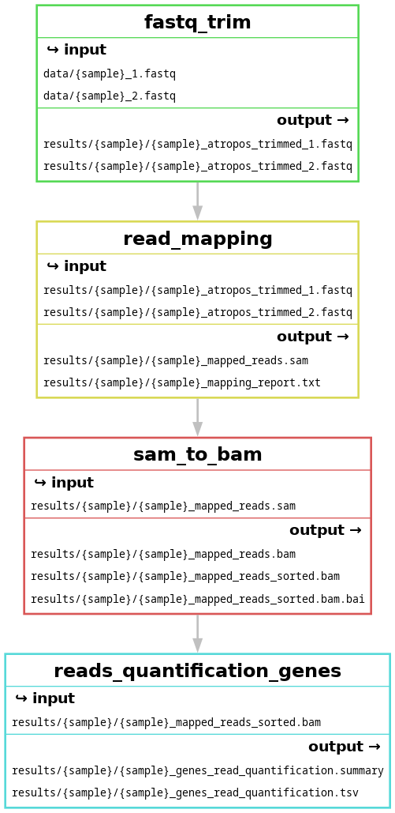

Making a more general-purpose Snakemake workflow
Learning outcomes
After having completed this chapter you will be able to:
- Create rules with multiple inputs and outputs
- Make the code shorter and more general by using placeholders and wildcards
- Optimise the memory usage of a workflow and checking its performances
- Visualise a workflow DAG
Material
Data origin
The data we will use during the exercises was produced in this work. Briefly, the team studied the transcriptional response of a strain of baker’s yeast, Saccharomyces cerevisiae, facing environments with different amount of CO2. To this end, they performed 150 bp paired-end sequencing of mRNA-enriched samples. Detailed information on all the samples are available here, but just know that for the purpose of the course, we selected 6 samples (3 replicates per condition, low and high CO2) and down-sampled them to 1 million read-pairs each to reduce computation times.
Exercises
One of the aims of today’s course is to develop a basic, yet efficient, workflow to analyse RNAseq data. This workflow takes reads coming from RNA sequencing as inputs and outputs a list of genes that are differentially expressed between two conditions. The files containing the reads are in FASTQ format and the output will be a tab-separated file containing a list of genes with expression changes, results of statistical tests…
In this series of exercises, we will create the ‘backbone’ of the workflow, i.e. the rules that are the most computationally expensive, namely:
- A rule to trim poor-quality reads
- A rule to map the trimmed reads on a reference genome
- A rule to convert and sort files from the SAM format to the BAM format
- A rule to count the reads mapping on each gene
At the end of this series of exercises, the DAG of your workflow should look like this:

the end of the session
Designing and debugging a workflow
If you have problems designing your Snakemake workflow or debugging it, you can find some help here.
General instructions and reminders
In each rule, you should try (as much as possible) to:
- Choose meaningful rule names
- Use rules dependency, with the syntax
rules.<rule_name>.output- If you use numbered outputs, the syntax becomes
rules.<rule_name>.output[n](withnstarting at 0) - If you use named outputs, the syntax becomes
rules.<rule_name>.output.<output_name>
- If you use numbered outputs, the syntax becomes
- Use placeholders
- Use wildcards
- Choose meaningful wildcard names
- The
output,log, andbenchmarkdirectives must have the same wildcard names! - You can use the same wildcard names in multiple rules for consistency and readability, but Snakemake will treat them as independent wildcards and their values will not be shared: rules are self-contained and wildcards are local to each rule (see a very nice summary on wildcards)
- Use multiple inputs/outputs (when needed/possible)
- Create a log file with the
logdirective - Create a benchmark file with the
benchmarkdirective
If you have a doubt, do not hesitate to test your workflow logic with a dry-run (the -n flag): snakemake --cores 1 -n <target>. Snakemake will then display all the jobs required to generate the target. To obtain additional information on why a specific job is necessary, run Snakemake with the -r flag (which can be -and usually is- combined with -n): snakemake --cores 1 -n -r <target>. For each job, Snakemake will print a reason field explaining why the job was required. To visualize the exact command executed by each job (with the placeholders and wildcards replaced by their values), run snakemake with the -p flag: snakemake --cores 1 -n -r -p <target>.
Downloading the data and setting up the directory structure
In this part, we will download the data and start building the directory structure of our workflow according to the official recommendations. We already starting doing so in the previous series of exercises and ultimately, it should resemble this:
│── .gitignore
│── README.md
│── LICENSE.md
│── benchmarks
│ │── sample1.fastq
│ └── sample2.fastq
│── config
│ │── config.yaml
│ └── some-sheet.tsv
│── data
│ │── sample1.fastq
│ └── sample2.fastq
│── images
│ └── rulegraph.svg
│── logs
│ │── sample1.log
│ └── sample2.log
│── results
│ │── sample1
│ │ └── sample1.bam
│ │── sample2
│ │ └── sample2.bam
│ └── DEG_list.tsv
│── resources
│ │── Scerevisiae.fasta
│ └── Scerevisiae.gtf
└── workflow
│── envs
│ │── tool1.yaml
│ └── tool2.yaml
│── rules
│ │── module1.smk
│ └── module2.smk
│── scripts
│ │── script1.py
│ └── script2.R
└── Snakefile
For now, the main thing to remember is that the workflow code goes into a subfolder called workflow and the rest is mostly input/output files, except for the config subfolder, which will be explained later. All output files generated in the workflow should be stored under results/.
Now, let’s download the data, uncompress it and build the first part of the directory structure.
ssh -i ~/.ssh/key_username.pem username@18.195.170.182 # Connect to the server
wget https://containers-snakemake-training.s3.eu-central-1.amazonaws.com/snakemake_rnaseq.tar.gz # Download the data
tar -xvf snakemake_rnaseq.tar.gz # Uncompress the archive
rm snakemake_rnaseq.tar.gz # Delete the archive
cd snakemake_rnaseq/ # Start developing in a new folder
In this new folder, you should now see 2 subfolders:
data/, which contains the data to analyseresources/, which contains retrieved resources, here the assembly, the genome indices and the annotation file of S. cerevisiae. It may also contain small resources delivered along with the workflow via git
Let’s create another subfolder, this time to host all the files containing the code, as well as the Snakefile:
mkdir workflow # Create a new folder
touch workflow/Snakefile # Create an empty Snakefile
The Snakefile marks the entrypoint of the workflow. It will be automatically discovered when running Snakemake from the root of the structure, here snakemake_rnaseq/. We can also tell Snakemake to use a specific Snakefile with the -s flag: snakemake --cores 1 -s <Snakefile_path> <target>, but it is highly discouraged as it hampers reproducibility.
If you followed the general instructions, Snakemake should create all the other missing folders by itself (except one that you will discover at the end of this series of exercises), so it is now time to create the rules mentioned earlier. Have a look here for a few pieces of advice on workflow design.
‘bottom-up’ or ‘top-down’ development?
Even if it is often easier to start from the final outputs and work backwards to the first inputs, the next exercises are presented in the opposite direction (first inputs to last outputs) to make the session easier to understand. That being said, feel free to work and develop your code in the order you prefer!
Even if we asked you to use wildards, do not try to process all the samples yet. Choose and work with one sample (which means two .fastq files because reads are paired-end) in this series of exercises. We will see an efficient way to process list of files in the next series of exercises.
Creating a rule to trim reads
Usually, the first step in dealing with sequencing data is to improve the reads quality by removing low quality bases, stretches of As and Ns and reads that are too short.
Adapters trimming
In theory, trimming also removes sequencing adapters, but we will not do it here to keep computation time low and avoid having to parse other files to extract the adapter sequences.
Exercise: Implement a rule to trim the reads contained in .fastq files using atropos.
Hint
- You can find information on how to use atropos and its parameters with
atropos trim -h - The files to trim are located in
data/ - The base of the trimming command is
atropos trim -q 20,20 --minimum-length 25 --trim-n --preserve-order --max-n 10 --no-cache-adapters -a "A{{20}}" -A "A{{20}}"- If you are interested in what these options mean, see below for an explanation
- The paths of the files to trim (i.e. input files, in FASTQ format) are specified with the options
-pe1(first read) and-pe2(second read) - The paths of the trimmed files (i.e. output files, also in FASTQ format) are specified with the options
-o(first read) and-p(second read) - atropos outputs some information as well as its trimming report in the terminal (stdout to be exact); do not forget to redirect these information to the log file with
>> {log}
Please give it a try before looking at the answer!
Answer
This is one way of writing this rule, but definitely not the only way! This is true for all the rules presented here.
rule fastq_trim:
'''
This rule trims paired-end reads to improve their quality. Specifically, it removes:
- Low quality bases
- A stretches longer than 20 bases
- N stretches
'''
input:
reads1 = 'data/{sample}_1.fastq',
reads2 = 'data/{sample}_2.fastq',
output:
trim1 = 'results/{sample}/{sample}_atropos_trimmed_1.fastq',
trim2 = 'results/{sample}/{sample}_atropos_trimmed_2.fastq'
log:
'logs/{sample}/{sample}_atropos_trimming.log'
benchmark:
'benchmarks/{sample}/{sample}_atropos_trimming.txt'
resources:
mem_mb = 500
shell:
'''
echo "Trimming reads in <{input.reads1}> and <{input.reads2}>" > {log}
atropos trim -q 20,20 --minimum-length 25 --trim-n --preserve-order --max-n 10 \
--no-cache-adapters -a "A{{20}}" -A "A{{20}}" \
-pe1 {input.reads1} -pe2 {input.reads2} -o {output.trim1} -p {output.trim2} &>> {log}
echo "Trimmed files saved in <{output.trim1}> and <{output.trim2}> respectively" >> {log}
echo "Trimming report saved in <{log}>" >> {log}
'''
Note the three things that are happening here:
- We used the
{sample}wildcards twice in the output paths. This is because we prefer to have all the files linked to a sample in the same directory - We added a memory limit for this job: 500 MB. Because we have limited resources in this server compared to a High Performance Computing cluster (HPC), this will help Snakemake to better allocate resources and parallelise jobs. You can determine the maximum amount of memory used by a rule thanks to the max_rss column in a benchmark result (results are shown in MB). More information here
- We used a backslash
\to split a very long line in smaller lines. This is purely ‘cosmetic’, to avoid very long lines that are painful to read, copy…
Paths in Snakemake
All the paths in the Snakefile are relative to the working directory in which the snakemake command is executed.
- If you execute Snakemake in
snakemake_rnaseq/, the relative path to the input files in the rule isdata/<sample>.fastq - If you execute Snakemake in
snakemake_rnaseq/workflow/, the relative path to the input files in the rule is../data/<sample>.fastq
Exercise: If you had to run the workflow by specifying only one output, what command would you use?
Answer
snakemake --cores 1 -r -p results/highCO2_sample1/highCO2_sample1_atropos_trimmed_1.fastq
If you run it now, don’t forget to have a look at the log and benchmark files!
atropos options
-q 20,20: trim low-quality bases from 5’, 3’ ends of each read before adapter removal--minimum-length 25: discard trimmed reads that are shorter than 25 bp--trim-n: trim N’s on ends of reads--preserve-order: preserve order of reads in input files--max-n 10: discard reads with more than 10 N--no-cache-adapters: do not cache adapters list as ‘.adapters’ in the working directory-a "A{{20}}" -A "A{{20}}": remove series of 20 As in the adapter sequence (-afor the first read of the pair,-Afor the second one)- The usual command-line syntax is
-a "A{20}". Here, brackets were doubled to prevent Snakemake from interpreting{20}as a wildcard
- The usual command-line syntax is
Creating a rule to map trimmed reads on a reference genome
Once we have trimmed reads, the next step is to map those reads onto a reference assembly, here S. cerevisiae strain S288C, to eventually obtain read counts. The assembly used in this exercise is RefSeq GCF_000146045.2 and was retrieved via the NCBI genome website.
Exercise: Implement a rule to map the trimmed reads on the S. cerevisiae assembly using HISAT2.
HISAT2 genome index
To align reads to a genome, HISAT2 relies on a graph-based index. We built the genome index for you, using the command hisat2-build -p 24 -f Scerevisiae.fasta resources/genome_indices/Scerevisiae_index.
-p is the number of threads to use, -f is the genomic sequence in FASTA format and Scerevisiae_index is the global name shared by all the index files.
Hint
- You can find information on how to use HISAT2 and its parameters with
hisat2 -h - The base of the mapping command is
hisat2 --dta --fr --no-mixed --no-discordant --time --new-summary --no-unal- If you are interested in what these options mean, see below for an explanation
- The path of the genome indices (i.e. input files, in binary format) is specified with the option
-x. The files have a shared title ofresources/genome_indices/Scerevisiae_index, which is the value you need to use for-x - The paths of the trimmed files (i.e. input files) are specified with the options
-1(first read) and-2(second read) - The path of the mapped reads file (i.e. output file, in SAM format) is specified with the option
-S(do not forget the .sam extension to the filename) - The path of the mapping report (i.e. output file, in text format) is specified with the option
--summary-file - HISAT2 also outputs information in the terminal (stderr to be exact); do not forget to redirect these to the log file with
2>> {log} - This step is the longest of the workflow. With the current settings, it should take ~6 min to complete. If you decide to run it now, you should launch it and start working on the next rules
Please give it a try before looking at the answer!
Answer
rule read_mapping:
'''
This rule maps trimmed reads of a fastq on a reference assembly.
'''
input:
trim1 = rules.fastq_trim.output.trim1,
trim2 = rules.fastq_trim.output.trim2
output:
sam = 'results/{sample}/{sample}_mapped_reads.sam',
report = 'results/{sample}/{sample}_mapping_report.txt'
log:
'logs/{sample}/{sample}_mapping.log'
benchmark:
'benchmarks/{sample}/{sample}_mapping.txt'
resources:
mem_gb = 2
shell:
'''
echo "Mapping the reads" > {log}
hisat2 --dta --fr --no-mixed --no-discordant --time --new-summary --no-unal \
-x resources/genome_indices/Scerevisiae_index \
-1 {input.trim1} -2 {input.trim2} -S {output.sam} --summary-file {output.report} 2>> {log}
echo "Mapped reads saved in <{output.sam}>" >> {log}
echo "Mapping report saved in <{output.report}>" >> {log}
'''
Exercise: If you had to run the workflow by specifying only one output, what command would you use?
Answer
snakemake --cores 1 -r -p results/highCO2_sample1/highCO2_sample1_mapped_reads.sam
If you run it now, don’t forget to have a look at the log and benchmark files!
HISAT2 options
--dta: report alignments tailored for transcript assemblers--fr: set alignment of -1, -2 mates to forward/reverse (position of reads in a pair relatively to each other)--no-mixed: remove unpaired alignments for paired reads--no-discordant: remove discordant alignments for paired reads--time: print wall-clock time taken by search phases--new-summary: print alignment summary in a new style--no-unal: suppress SAM records for reads that failed to align
Creating a rule to convert and sort SAM files to BAM
HISAT2 only outputs mapped reads in the SAM format. However, most downstream analysis tools use the BAM format, which is the compressed binary version of the SAM format and, as such, is much smaller, easier to manipulate and transfer and allows a faster data retrieval. Additionally, many analyses require that BAM files are sorted by genomic coordinates and indexed, because sorted BAM files can be processed much more easily and quickly than unsorted ones.
Alignment data files
More information on alignment data files and other formats on the official github repository of the formats.
Exercise: Implement a single rule to:
- Convert SAM files to BAM using Samtools
- Sort the BAM files using Samtools
- Index the sorted BAM files using Samtools
Hint
- You can find information on how to use Samtools and its parameters with
samtools --help - You need to write 3 commands that will be executed sequentially: the output of command 1 will be the input of command 2 etc…
- No panic! These commands are pretty simple and do not use many options!
- To convert SAM format to the BAM format, use the command
samtools view <input_file> -b -o <output_file> - To sort a BAM file, use the command
samtools sort <input_file> -O bam -o <output_file> - To index a BAM file, use the command
samtools index -b <input_file> -o <output_file>- The index must have the exact same name than its associated BAM file, except it finishes with the extension
.bam.baiinstead of.bam
- The index must have the exact same name than its associated BAM file, except it finishes with the extension
- If you are interested in what these options mean, see below for an explanation
- To catch potential information and errors, do not forget to redirect
stderrto the log file with2>> {log}
Please give it a try before looking at the answer!
Answer
rule sam_to_bam:
'''
This rule converts a sam file to bam format, sorts it and indexes it.
'''
input:
sam = rules.read_mapping.output.sam
output:
bam = 'results/{sample}/{sample}_mapped_reads.bam',
bam_sorted = 'results/{sample}/{sample}_mapped_reads_sorted.bam',
index = 'results/{sample}/{sample}_mapped_reads_sorted.bam.bai'
log:
'logs/{sample}/{sample}_mapping_sam_to_bam.log'
benchmark:
'benchmarks/{sample}/{sample}_mapping_sam_to_bam.txt'
resources:
mem_mb = 250
shell:
'''
echo "Converting <{input.sam}> to BAM format" > {log}
samtools view {input.sam} -b -o {output.bam} 2>> {log}
echo "Sorting BAM file" >> {log}
samtools sort {output.bam} -O bam -o {output.bam_sorted} 2>> {log}
echo "Indexing the sorted BAM file" >> {log}
samtools index -b {output.bam_sorted} -o {output.index} 2>> {log}
echo "Sorted file saved in <{output.bam_sorted}>" >> {log}
'''
Exercise: If you had to run the workflow by specifying only one output, what command would you use?
Answer
snakemake --cores 1 -r -p results/highCO2_sample1/highCO2_sample1_mapped_reads_sorted.bam
If you run it now, don’t forget to have a look at the log and benchmark files!
Samtools options
- samtools view
-b: flag to tell Samtools to create an output in BAM format-o: path of the output file
- samtools view
-O bam: flag to tell Samtools to create an output in BAM format-o: path of the output file
- samtools index
-b: flag to tell Samtools to create an index in BAI format
Creating a rule to count mapped reads
Most of the analyses happening downstream the alignment step, including Differential Expression Analyses, are starting off read counts, either by exon or gene. However, we are still missing those counts!
Counting reads on exons/genes
To count reads mapping on genomic features, we first need a definition of those features. In this case, we picked one of the best-known model organism, S. cerevisiae, which has been annotated for a long time. These annotations are easily available on the NCBI or the Saccharomyces Genome Database. If your organism has not been annotated yet, there are ways to work around this problem, but this is an entirely different field that we won’t discuss here!
Chromosome names
If you are working with genome sequences and annotations from different sources, remember that they must contain the chromosome names, otherwise counting will not work.
Exercise: Implement a rule to count the reads mapping on each gene of the S. cerevisiae genome using featureCounts.
Hint
- You can find information on how to use featureCounts and its parameters with
featureCounts -h - The base of the mapping command is
featureCounts -t exon -g gene_id -s 2 -p -B -C --largestOverlap --verbose -F GTF- If you are interested in what these options mean, see below for an explanation
- The path of the file containing the annotations (i.e. input files, in GTF format) is specified with the
-aoption. This file is located atresources/Scerevisiae.gtf - The paths of the sorted BAM file(s) (i.e. input file(s)) are not specified with an option, they are simply added at the end of the command
- The path of the file containing the count results (i.e. output file, in tsv format) is specified with the option
-o- featureCounts will also output a separate file (in tsv format) including summary statistics of counting results, with the name
<output_name>.summary. For example, if the output istest.tsv, the summary will be printed intest.tsv.summary. Do not forget this output in your rule
- featureCounts will also output a separate file (in tsv format) including summary statistics of counting results, with the name
- featureCounts also outputs information in the terminal (stderr to be exact); do not forget to redirect these to the log file with
2>> {log}
Please give it a try before looking at the answer!
Answer
rule reads_quantification_genes:
'''
This rule quantifies the reads of a bam file mapping on genes and produces
a count table for all genes of the assembly.
'''
input:
bam_once_sorted = rules.sam_to_bam.output.bam_sorted,
output:
gene_level = 'results/{sample}/{sample}_genes_read_quantification.tsv',
gene_summary = 'results/{sample}/{sample}_genes_read_quantification.summary'
log:
'logs/{sample}/{sample}_genes_read_quantification.log'
benchmark:
'benchmarks/{sample}/{sample}_genes_read_quantification.txt'
resources:
mem_mb = 500
shell:
'''
echo "Counting reads mapping on genes in <{input.bam_once_sorted}>" > {log}
featureCounts -t exon -g gene_id -s 2 -p -B -C --largestOverlap --verbose -F GTF \
-a resources/Scerevisiae.gtf -o {output.gene_level} {input.bam_once_sorted} &>> {log}
echo "Renaming output files" >> {log}
mv {output.gene_level}.summary {output.gene_summary}
echo "Results saved in <{output.gene_level}>" >> {log}
echo "Report saved in <{output.gene_summary}>" >> {log}
'''
featureCounts options
-t: specify on which feature type to count the reads-g: specify if and how to gather feature counts. Here, reads are counted by exon (-t) and the exon counts are gathered by genes ‘meta-features’ (-g)-s: perform strand-specific read counting- Strandedness is determined by looking at the mRNA library preparation kit. It can also be determined a posteriori with scripts such as infer_experiment.py from the RSeQC package
-p: count fragments instead of reads.- If you don’t use this option with paired-end reads, featureCounts won’t be able to assign the read-pairs to features
-B: only count read pairs that have both ends aligned-C: do not count read pairs that have their two ends mapping to different chromosomes or mapping on the same chromosome but on different strands--largestOverlap: assign reads to the meta-feature/feature that has the largest number of overlapping bases-F: specify format of the provided annotation file--verbose: output verbose information, such as unmatched chromosome/contig names
Running the workflow
Exercise: If you have not done it after each step, it is now time to run the entire workflow on your sample of choice. What command will you use to run it?
Answer
Because all the rules are chained together, you only need to specify one of the final outputs to trigger the execution of all the previous rules:
snakemake --cores 1 -F -r -p results/highCO2_sample1/highCO2_sample1_genes_read_quantification.tsv.
You can add the -F flag to force an entire re-run. The entire run should take about ~10 min to complete.
Exercise: Check Snakemake’s log in .snakemake/log/. Is everything as you expected, especially the wildcard values, input and output names etc…?
Answer
cat .snakemake/log/<latest_log>
Visualising the DAG of the workflow
We have now implemented and run the main steps of our workflow. It is always a good idea to visualise the whole process to check for errors and inconsistencies. Snakemake’s has a built-in workflow visualisation feature to do this.
Exercise: Visualise the entire workflow’s Directed Acyclic Graph using the --dag flag. Do you need to specify a target?
Hint
- Try to follow the official recommendations on workflow structure, which states that images are supposed to go in the
images/subfolder - Snakemake prints a DAG in text format, so we need to use the
dotcommand to transform it into a picture - Save the result as a PNG picture
Answer
If we run the command without target: snakemake --cores 1 --dag -F | dot -Tpng > images/dag.png, we will get a Target rules may not contain wildcards. error, which means we need to add a target. Same as before, it makes sense to use one of the final outputs to get the entire workflow: snakemake --cores 1 --dag -F results/highCO2_sample1/highCO2_sample1_genes_read_quantification.tsv | dot -Tpng > images/dag.png.
But once again, we will get an error: BrokenPipeError: [Errno 32] Broken pipe. This is because we are piping the command output to a folder (images/) that does not exist yet The folder is not created by Snakemake because it isn’t handled as part of an actual run. So we have to create the folder before generating the DAG:
mkdir images
snakemake --cores 1 --dag -F results/highCO2_sample1/highCO2_sample1_genes_read_quantification.tsv | dot -Tpng > images/dag.png
Some explanations on the command:
-F: force to show the entire worklow and ensures all jobs are shown. You can also use-f <target>to show fewer jobsdot: tool that is a part of the graphviz package and is used to draw hierarchical or layered drawings of directed graphs, i.e. graphs in which edges (arrows) have a direction-T: control the image format. Available formats are listed here
DAG aspect
If you already computed all the outputs of the workflow, steps in the DAG will have dotted lines. To visualise the DAG before running the workflow, add -F/--forceall to the snakemake command to force the execution of all jobs.
DAG = dry-run
The --dag flag implicitly activates the --dry-run/--dryrun/-n option, which means that no jobs are executed during the plot creation.
There are actually 3 types of DAG:
- A DAG, created with the
--dagoption - A filegraph, created with the
--filegraphoption - A rulegraph, created with the
--rulegraphoption
Exercise: Generate the filegraph and rulegraph of your workflow. Feel free to try different pictures format. What are the differences between the plots?
Answer
- Generate the rulegraph:
snakemake --cores 1 --rulegraph -F results/highCO2_sample1/highCO2_sample1_genes_read_quantification.tsv | dot -Tpdf > images/rulegraph.pdf - Generate the filegraph:
snakemake --cores 1 --filegraph -F results/highCO2_sample1/highCO2_sample1_genes_read_quantification.tsv | dot -Tjpg > images/filegraph.jpg
You should obtain the 3 following figures:

at the end of the session
The differences between these plots are:
--dag: dependency graph of all the jobs--filegraph: dependency graph of rules with inputs and outputs (rule appears once, with wildcards)--rulegraph: dependency graph of rules (rule appears once)
Designing a Snakemake workflow… and debugging it!
Designing a workflow
There are many ways to design a new workflow, but these few pieces of advice will be useful in most cases:
- Start with a pen and paper: try to find out how many rules you will need and how they depend on each other. In other terms, start by sketching the DAG of your workflow!
- Remember that Snakemake has a bottom-up approach (it goes from the final outputs to the first input), so it may be easier for you to work in that order as well and write your last rule first
- Determine which rules (if any) aggregate or split inputs and create input functions accordingly (we will see how these functions work in session 4)
- Make sure your input and output directives are right before worrying about anything else, especially the shell sections.
- Remember that Snakemake builds the DAG before running the shell commands, so you can use the
--dryrunoption to test the workflow before running it. You can even do that without writing all the shell commands!
- Remember that Snakemake builds the DAG before running the shell commands, so you can use the
- List any parameters or settings that might need to be adjusted
- Choose meaningful and easy-to-understand names for your inputs, outputs, parameters, wildcards… to make your Snakefile as readable as possible. This is true for every script, piece of code, variable etc… and Snakemake is no exception! Have a look at The Zen of Python for more information
Debugging a workflow
It is very likely you will see bugs and errors the first time you try to run a new Snakefile: don’t be discouraged, this is normal!
Order of operations in Snakemake
The topic was tackled when DAGs were mentioned, but to efficiently debug a workflow, it is worth taking a deeper look at what Snakemake does when you execute the command snakemake --cores 1 <target>. There are 3 main phases:
- Prepare to run:
- Read all the rule definitions from the Snakefile
- Resolve the DAG (when Snakemake says ‘Building DAG of jobs’):
- Check what output(s) are required
- Look for a matching rule by looking at the outputs of all the rules
- Fill in the wildcards to determine the input of the matching rule
- Check whether this input is available; if not, repeat Step 2 until everything is resolved
- Run:
- If needed, create the folder for the output(s)
- If needed, remove the outdated output(s)
- Run the shell command with the placeholders replaced
- Check that the command ran without errors and produced the expected output(s)
Debugging advice
Sometimes, Snakemake will give you a precise error report, but other times less so. Try to identify which phase of execution failed (see previous paragraph on order of operations) and double-check the most common error causes for that phase:
- Parsing phase failures (phase 1):
- Syntax errors, among which (but not limited to):
- This errors can be easily solved using a text editor with Python/Snakemake text colouring
- Missing commas/colons/semicolons
- Unbalanced quotes/brackets/parenthesis
- Wrong indentation
- Failure to evaluate expressions
- Problems in functions (
expand(), input functions…) in input/output directives - Python logic added outside of rules
- Problems in functions (
- Other problems with rule definition
- Invalid rule names/directives
- Invalid wildcard names
- Mismatched wildcards
- Syntax errors, among which (but not limited to):
- DAG building failures (phase 2, before Snakemake tries to run any job):
- Failure to determine the target
- Ambiguous rules making the same output(s)
- On the contrary, no rule making the required output(s)
- Circular dependency (violating the ‘Acyclic’ property of a DAG).
- Write-protected output(s)
- DAG running failures (phase 3,
--dry-runworks and builds the DAG, but the real execution fails):- When a job fails, Snakemake reports an error, deletes all output file(s) for that job (potential corruption), and stops
- Shell command returning non-zero status
- Missing output file(s) after the commands have run
- Reference to a
$shell_variablebefore it was set - Use of a wrong/unknown placeholder inside
{ }